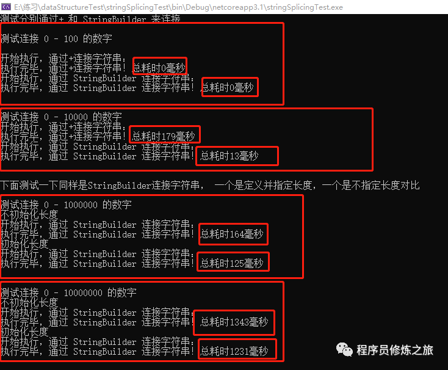

原文连接:https://www.cnblogs.com/team-xiong/p/12107502.html
字符串对我编程人员来说是字符串时每天见面的常客，你不认识不熟悉他都不得行，字符串的拼接更是家常便饭，那么在实际开发过程中实现字符串的拼接有哪一些方式呢？咱们一起来聊聊，来交流沟通，学习一波。也许你会说，那也太简单了嘛，谁不会啊，哈哈，使用起来确实简单，但是不一定我们都使用的方式还有优秀的方式吗？
在文章前，我们先简单聊聊关于string的数据类型存储必须了解概念：
string是一个引用类型，是一个sealed类，存储在堆内存上，每一次修改都会从新创建一个新的string来存储，原始的会自动被回收。这个是不感觉是废话，人人都知道嘛，哈哈哈。
下面以c#为开发语言来说明：实现字符串的拼接常用的方式有如下四种
其一、直接通过+拼接
直接通过+拼接是我们在代码中最常见的一种方式，下面以一个简单的代码段来分析分析
1 string str="1";
2
3 str=str+"2";第一段代码，首先分配了一个内存空间来存储str变量，其值为“1”
第二段代码，重新分配了一个新的内存空间来存储“12”，并将str指向新地址
通过分析，其实我们不难发现，两端就简单的代码，就会有两次内存地址操作，随着拼接字符串的个数地址，分配内存地址的次数也递增，当几个简单的字符串通过该方式拼接时，其实我们还是感觉不到性能的影响，但是当字符串数量大时，你都会有感觉了，那样不仅仅造成内存的浪费，还直接影响性能。
所以在实际开发工程中，通过+拼接字符串比较常见，但是如果只是见到这种方式也就不那么友好了，既然不友好，那么显然就会有比较友好的方式啦，下面我们就分析分析通过StringBuilder来实现字符串的拼接。
其二、通过StringBuilder拼接字符串
StringBuilder其实内部相当于是维护的一个字符数组，是一个可以动态增加自身数据长度，其默认长度为16，当存储的字符串超出其长度是，会自动扩容2倍长度。
哈哈，说到这儿，估计你看出了问题，那就是超出长度自动扩容，自动扩容是不是也需要牺牲性能，当然在几次扩容你还感觉不到性能的影响，但是如果词数多了，你就会感觉很明显，这也是对StringBuilder的一些使用技巧。
我们去看不同小伙伴的代码，你就会发现，技术老鸟，在初始化StringBuilder的时候会根据预估将要存储的字符串大小，给StringBuilder初始化一个长度，这也就是细节上的差距体现。
说了半天的废话，是不是要来的实际的代码来证明说的不是废话呢？不急不急，在文章最后，我会专门写测试代码对比分析的。
其三、string.Format不陌生吧
对于一些格式的数据拼接填充，string.Format也是经常看见的，他的一个很大好处就是，看上去比较清晰
其实我们看过string的底层实现我们会发现，其底层本质还是StringBuilder来实现的
下面就是string.format的源码实现

public static String Format(IFormatProvider provider, String format, params Object[] args) <br>{
if (format == null || args == null)
throw new ArgumentNullException((format==null)?"format":"args");
StringBuilder sb = new StringBuilder(format.Length + args.Length * 8);
sb.AppendFormat(provider,format,args);
return sb.ToString();
}
其实string.Format使用起来很简单，我就不在啰嗦介绍了，免得大家觉得烦，哈哈哈
string result=string.Format("大家好，我叫{0}，今年{1}","程序员修炼之旅",1);
其四、$方式拼接字符串
C#6.0出现了$方式拼接字符串，其实简单说就是string.Format简化操作版，string.Format如果拼接的字符串太多，估计自己都懵逼的分不清对应关系了，不知道你们遇到过没有，反正我原来是遇到过的。$就很好的规避了该问题，那么下 面来一个例子说明一切：
string name = "程序员修炼之旅";
int age = 1;
string str = string.Format("my name is{0}, I'm {1} years old",name,age);
string str2 = $"my name is{name}, I'm {age} years old";
最终结果是：str=str1其五，当然还有其他方式，不在此啰嗦了，后续在讨论
测试分析
说了半天，不拿点实际东西来测试，我知道你是不会信服的，下面就直接上测试代码：
using System;
using System.Diagnostics;
using System.Text;
namespace stringSplicingTest
{
/// <summary>
/// 字符串拼接练习
/// </summary>
public class Program
{
/// <summary>
/// 主函数入口
/// </summary>
/// <param name="args"></param>
static void Main(string[] args)
{
// 测试分别通过+ 和 StringBuilder 来连接 0 之100的数字
Console.WriteLine("测试分别通过+ 和 StringBuilder 来连接");
Console.WriteLine("");
Console.WriteLine("测试连接 0 - 100 的数字");
Console.WriteLine("");
PlusString(100);
StringBuilderString2(100);
Console.WriteLine("");
Console.WriteLine("");
Console.WriteLine("测试连接 0 - 10000 的数字");
PlusString(10000);
StringBuilderString2(10000);
Console.WriteLine("");
Console.WriteLine("");
// 下面测试一下同样是StringBuilder连接字符串，一个是定义吃指定长度，一个是不指定长度对比
Console.WriteLine(@"下面测试一下同样是StringBuilder连接字符串， 一个是定义并指定长度，一个是不指定长度对比");
Console.WriteLine("");
Console.WriteLine("测试连接 0 - 1000000 的数字");
Console.WriteLine("不初始化长度");
StringBuilderString(1000000);
Console.WriteLine("初始化长度");
StringBuilderString2(1000000);
Console.WriteLine("");
Console.WriteLine("");
Console.WriteLine("测试连接 0 - 10000000 的数字");
Console.WriteLine("不初始化长度");
StringBuilderString(10000000);
Console.WriteLine("初始化长度");
StringBuilderString2(10000000);
Console.ReadLine();
}
/// <summary>
/// 通过+拼接字符串
/// </summary>
/// <param name="totalNum"></param>
private static void PlusString(int totalNum)
{
//// 定义一个秒表，执行获取执行时间
Stopwatch st = new Stopwatch();//实例化类
st.Start();//开始计时
Console.WriteLine("开始执行，通过+连接字符串：");
string result = "";
//// 定义一个数组
for (int i = 0; i < totalNum; i++)
{
result = result + i.ToString();
}
//需要统计时间的代码段
st.Stop();//终止计时
Console.WriteLine(string.Format("执行完毕，通过+连接字符串！总耗时{0}毫秒",
st.ElapsedMilliseconds.ToString()));
}
/// <summary>
/// 通过s拼接字符串
/// </summary>
/// <param name="totalNum"></param>
private static void StringBuilderString(int totalNum)
{
//// 定义一个秒表，执行获取执行时间
Stopwatch st = new Stopwatch();//实例化类
st.Start();//开始计时
Console.WriteLine("开始执行，通过 StringBuilder 连接字符串：");
StringBuilder result = new StringBuilder();
//// 定义一个数组
for (int i = 0; i < totalNum; i++)
{
result.Append(i.ToString());
}
string result2 = result.ToString();
//需要统计时间的代码段
st.Stop();//终止计时
Console.WriteLine(string.Format("执行完毕，通过 StringBuilder 连接字符串！总耗时{0}毫秒",
st.ElapsedMilliseconds.ToString()));
}
/// <summary>
/// 通过StringBuilder拼接字符串,初始化时指定一个长度
/// </summary>
/// <param name="totalNum"></param>
private static void StringBuilderString2(int totalNum)
{
//// 定义一个秒表，执行获取执行时间
Stopwatch st = new Stopwatch();//实例化类
st.Start();//开始计时
Console.WriteLine("开始执行，通过 StringBuilder 连接字符串：");
StringBuilder result = new StringBuilder(totalNum * 6);
//// 定义一个数组
for (int i = 0; i < totalNum; i++)
{
result.Append(i.ToString());
}
string result2 = result.ToString();
//需要统计时间的代码段
st.Stop();//终止计时
Console.WriteLine(string.Format("执行完毕，通过 StringBuilder 连接字符串！总耗时{0}毫秒",
st.ElapsedMilliseconds.ToString()));
}
}
}

结果分析总结：
测试分两个点：
其一测试的是：通过+和StringBuilder拼接字符串的性能比较哦
其二测试的是：StringBuilder初始化长度和不初始化长度的性能比较
大概得出以下几点结论
1、在待拼接的字符串少的时，+和StringBuilder没有明显的性能差距
2、当拼接的字符串多时，StringBuilder的优势越来越明显
3、同样是StringBuilder拼接字符串，预估初始化长度的效率比不初始化指定长度的效率高
说到此，我相信大家都知道该怎么使用了。好了，时间不早了，赶紧洗洗睡了，明天还得上班呢？
END
原文地址：https://www.cnblogs.com/xiaoXuZhi/p/XYH_String2.html